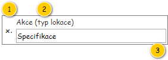

Stručný popis
Formulář slouží k rozdělení konkrétní Objednané služby na dvě části.
Poznámka: Vychází z , v mnoha ohledech se však odlišuje.
Uživatelské rozhraní
Vstupní data
| Vstupní parametr | Datový typ | Povinnost | Popis | Poznámka |
|---|---|---|---|---|
| Objednaná služba | Objednaná služba | Ano | Objednaná služba, která má být rozdělena. | – |
| Datum realizace | Datum | Ano | Předpokládané datum začátku realizace vytvářené Objednané služby. | Slouží pro nastavení předpokládaného data realizace vytvářené Objednané služby. |
Výstupní data
| Výstupní parametr | Datový typ | Povinnost | Popis | Poznámka |
|---|---|---|---|---|
| Místo rozdělení | – | Ano | Místo, ve kterém dochází k rozdělení Objednané služby. | – |
| Datum realizace od | Datum | Ano | Začátek předpokládaného období realizace vytvářené Objednané služby. | – |
| Datum realizace do | Datum | Ano | Konec předpokládaného období realizace vytvářené Objednané služby. | – |
Rozložení
Drátový diagram

Přehled UI komponent
| Callout | Skupina |
|---|---|
| 1 | Informace o objednané službě |
| 2 | Výběr pozice v rámci objednané služby |
| 3 | Datum realizace vytvořené objednané služby |
| 4 | Mapa |
Náhled

Informace o objednané službě
Panel vychází z , tomu odpovídá i dále uvedený popis.
Drátový diagram

Přehled UI komponent
| Callout | Komponenta | Nadpis | Typ komponenty | Příklad hodnoty | Hodnota | Výchozí hodnota | Formát | Zpřístupněná | Viditelná | Chování | Validace | Poznámka |
|---|---|---|---|---|---|---|---|---|---|---|---|---|
| 1 | Identifikace objednaného úkonu | – | Label | Přistavení | STRABAG s.r.o. | Entita Objednaný úkon – atribut Objednaný úkon entity Objednaná služba. | – | Viz Identifikace objednaného úkonu.
| – | Vždy | – | – | – |
| 2 | Identifikace objednané nádoby | Ikona: ra-trash | Label | 17 20 13 | HNK 16 krytý (cizí) | Entita Objednaná služba. | – | Viz Identifikace objednané nádoby. | – | Vždy | – | – | – |
| 3 | Časové okno | Ikona: ra-clock | Label | 6:30-7:30 | Entita Objednaná služba. | – | <Čas realizace od>-<Čas realizace od> | – | Pokud je splněna alespoň jedna z uvedených podmínek:
| – | – | – |
| 4 | Poznámka | Ikona: ra-info-full | Label | Zavolat 30 minut předem. | Entita Objednaná služba. | – | Pokud nastane situace, že délka hodnoty přesahuje délku řádku v rámci panelu, je zobrazena pouze taková část textu, která se vejde právě na jeden řádek. Na konci zobrazené části textu je pak vložen znak „…“ (ALT+0133), který naznačuje, že není zobrazen celý text. Po najetí myši na tento řádek dojde k zobrazení bublinkové nápovědy s úplným textem. | – | Pokud je hodnota různá od NULL. | – | – | – |
| 5 | Identifikace objednávky | – | – | Objednávka: 1131-001028 | Entita Objednávka – atribut Objednávka entity Položka objednávky – atribut Položka objednávky entity Objednaná nádoba – atribut Objednaná nádoba entity Objednaný úkon – atribut Objednaný úkon entity Objednaná služba. | – | Objednávka: <Číslo objednávky>
| – | Pokud je hodnota různá od NULL. | Pokud je zobrazena ikona a uživatel na ni najede myší, je zobrazena bublinková nápověda s uvedenou hodnotou. | – | Hodnota se zobrazuje po najetí myši na ikonu ve formě bublinkové nápovědy. |
Výběr pozice v rámci objednané služby
Drátový diagram

Přehled UI komponent
| Callout | Komponenta | Nadpis | Typ komponenty | Příklad hodnoty | Hodnota | Výchozí hodnota | Formát | Zpřístupněná | Viditelná | Chování | Validace | Poznámka |
|---|---|---|---|---|---|---|---|---|---|---|---|---|
| 1 | Přehled lokací objednané služby | – | Panel lokace objednané služby | – | Entita Lokace objednané služby – atribut Lokace objednané služby entity Objednaná služba, která je získána na vstupu UC (vstupní parametr Objednaná služba). | – | – | – | – | – | – | – |
| 2 | Výběr místa rozdělení | – | RadioButton | – | – | Označena je v pořadí první ze zobrazených položek, kterou je možné vybrat (viz sloupec Zpřístupněná). | – | Pokud položka představuje validní místo rozdělení (viz sloupec Validace). | Vždy | Pokud uživatel změní místo rozdělení, je u aktuálního místo rozdělení označení odebráno – může být tedy zároveň označeno pouze jedno místo rozdělení. Trasa, která se vyskytuje mezi stejnými Lokacemi objednané služby jako místo rozdělení, není v mapě vykreslena. | Před nebo za místem rozdělení musí být obsažena alespoň jedna Lokace objednané služby uvedeného typu (atribut Typ lokace):
Lokace objednané služby uvedeného typu se nemusí vyskytovat bezprostředně před a za místem rozdělení. Musí být obsaženy v jednotlivých částech dělené Objednané služby. Před i za pozicí MDU musí být obsažena alespoň jedna Lokace objednané služby, jejíž atribut Monitoring realizace = TRUE. | Není možné označit více než jednu položku. Nastavená pozice je předána na výstupu UC (výstupní parametr Místo rozdělení). |
Chování
Panel lokace objednané služby
Drátový diagram

Přehled UI komponent
| Callout | Komponenta | Nadpis | Typ komponenty | Příklad hodnoty | Hodnota | Výchozí hodnota | Formát | Zpřístupněná | Viditelná | Chování | Validace | Poznámka |
|---|---|---|---|---|---|---|---|---|---|---|---|---|
| 1 | Pořadí lokace | – | – | 2. | Pořadí Lokace objednané služby v rámci odpovídající Objednané služby. | – | – | Vždy | – | – | – | |
| 2 | Identifikace lokace | – | Label | Umístit (Provozovna) | Entita Lokace objednané služby – atribut Lokace objednané služby entity Objednaná služba. | – | Dle typu Lokace objednané služby:
| – | Vždy | – | – | – |
| 3 | Specifikace lokace | – | Label | Opatovská 1735, 911 00 Trenčín | Pro uvedené typy Lokace objednané služby:
| – | Pokud není dostupné Číslo orientační:
Pokud není dostupné Číslo popisné:
| – | Vždy | – | – | – |
| 0:30 | Pro uvedené typy Lokace objednané služby:
| – |
Datum realizace vytvořené objednané služby
Drátový diagram
Poznámka: Texty uvedené v rámci drátového diagramu jsou ilustrační.

Přehled UI komponent
| Callout | Komponenta | Nadpis | Typ komponenty | Příklad hodnoty | Hodnota | Výchozí hodnota | Formát | Zpřístupněná | Viditelná | Chování | Validace | Poznámka |
|---|---|---|---|---|---|---|---|---|---|---|---|---|
| 1 | Nadpis skupiny | – | Label | – | Realizace vytvořené služby | – | Řez písma: tučné. | – | Vždy | – | – | – |
| 2 | Datum realizace od | Datum* | DatePicker | 5. 6. 2018 | – | Hodnota získána na vstupu UC (vstupní parametr Datum realizace). | Datum | Vždy | Vždy | – | – | Nastavená hodnota je předána na výstupu UC (výstupní parametr Datum realizace od). |
| 3 | Datum realizace do | – | DatePicker | 6. 6. 2018 | – | Hodnota získána na vstupu UC navýšená o 1 den (vstupní parametr Datum realizace). | Datum | Vždy | Vždy | – | Větší nebo rovno Datum realizace od. | Nastavená hodnota je předána na výstupu UC (výstupní parametr Datum realizace do). |
Mapa
Zobrazení mapy spolu s jejím chováním vychází z již existujícího popisu: Mapa lokací objednané služby (viz ). Liší se pak v následujících ohledech:
- Mapa neumožňuje žádné interakce, které by způsobily změnu v rámci zobrazené Objednané služby.
- Mezi Lokacemi objednané služby, mezi které je vloženo místo rozdělení (viz Výběr pozice v rámci objednané služby), nedochází k vykreslení trasy.
| Callout | Komponenta | Nadpis | Typ komponenty | Příklad hodnoty | Hodnota | Výchozí hodnota | Formát | Zpřístupněná | Viditelná | Chování | Validace | Poznámka |
|---|---|---|---|---|---|---|---|---|---|---|---|---|
| 1 | Identifikace objednaného úkonu | – | Label | Odvoz | Ivan Veliký, Zemarovce | Entita Objednaný úkon – atribut Objednaný úkon entity Objednaná služba. | – | Viz Identifikace objednaného úkonu.
| – | Vždy | – | – | – |
| 2 | Identifikace objednané nádoby | Ikona:
| Label | 17 20 13 | HNK 16 krytý | Vlastní | Entita Objednaná nádoba – atribut Objednaná nádoba entity Objednaný úkon – atribut Objednaný úkon entity Objednaná služba. | – | Identifikace objednané nádoby | – | Vždy | – | – | – |
| 3 | Časové okno | Ikona:
| Label | 6:30-7:30 | Entita Objednaná služba. | – | <Čas realizace od>-<Čas realizace od> | – | Pokud je nastaveno časové okno – tedy je různé od 0:00-23:59. | – | – | – |
| 4 | Poznámka | Ikona:
| Label | Nezpevněný povrch. | Entita Objednaná služba. | – | – | Pokud je obsažena poznámka. | – | – | – | |
| 5 | Přehled lokací objednané služby | – | Panel lokace objednané služby | – | Kolekce Lokací objednané služby, která je získána na vstupu UC. | – | – | – | – | – | – | – |
| 6 | Výběr místa rozdělení | – | RadioButton | – | – | Označena je v pořadí první ze zobrazených položek. | – | Pokud položka představuje validní místo rozdělení. | Vždy | Ve výchozím stavu je automaticky označeno takové místo rozdělení, které je vykresleno za první Lokací objednané služby. Pokud uživatel místo rozdělení změní, je u aktuálního místo rozdělení označení odebráno – může být tedy zároveň označeno pouze jedno místo rozdělení. V mapě je pak skryta taková spojnice, která se vyskytuje mezi takovými Lokacemi objednané služby, mezi kterými je nastaveno místo rozdělení. | Před i za místem rozdělení musí být obsažena alespoň jedna Lokace objednané služby, jejíž atribut Monitoring realizace = TRUE. | Není možné označit více než jednu položku. |
| 7 | Nadpis informací o vytvořené službě | – | Label | – | Realizace vytvořené služby | – | – | – | Vždy | – | – | |
| 8 | Datum realizace od vytvořené služby | Datum* | DatePicker | 5. 6. 2018 | – | Dnešní datum. | Vždy | Vždy | – | Větší nebo rovno dnešní datum. | ||
| 9 | Datum realizace do vytvořené služby | – | DatePicker | 6. 6. 2018 | – | Zítřejší datum. | Vždy | Vždy | – | Větší nebo rovno Datum realizace do vytvořené služby. | ||
| 10 | Mapa | – | Map | – | – | – | – | Nikdy | Vždy | Viz Mapa lokací objednané služby. | – | – |
Grafický návrh
Revize
23. 2. 2024: Tomáš Nadrchal
| Odkaz | Stručný popis změny/doplnění |
|---|---|
| Výběr pozice v rámci objednané služby | Doplněno chování pro nový typ lokace objednané služby (naznačeno modře). |
| Panel lokace objednané služby | Doplněno chování pro nový typ lokace objednané služby (naznačeno modře). |
28. 3. 2021: Tomáš Nadrchal
Provedeny změny v rámci celého dokumentu (naznačeno modře). Viz ID-040: Násobné rozdělení objednané služby.
4. 7. 2019: Miroslav Slivoně
| Odkaz | Stručný popis změny/doplnění |
|---|---|
| Přehled UI komponent | Výběr místa rozdělení - úprava validace |
21. 6. 2019: Tomáš Nadrchal
| Odkaz | Stručný popis změny/doplnění |
|---|---|
| Uživatelské rozhraní | Aktualizována vstupní data formuláře (naznačeno modře). |
| Rozložení | Aktualizován zdroj dat pro vykreslení panelů Lokacemi objednané služby (naznačeno modře). |
31. 1. 2019: Tomáš Nadrchal
| Odkaz | Stručný popis změny/doplnění |
|---|---|
| Přehled UI komponent | Doplněna validace pro výběr místa rozdělení. |
| Aktualizováno chování dle typu Lokace objednané služby. |